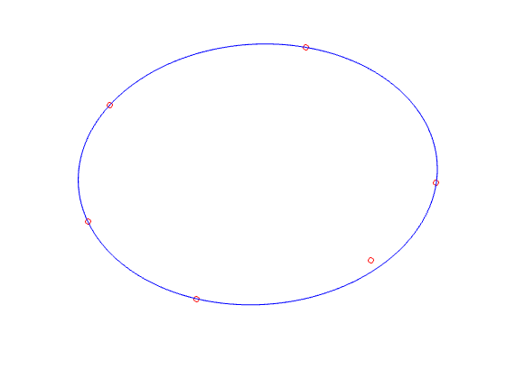

% Section 8.4.1, Boyd & Vandenberghe "Convex Optimization" % Almir Mutapcic - 10/05 % (a figure is generated) % % Given a finite set of points x_i in R^2, we find the minimum volume % ellipsoid (described by matrix A and vector b) that covers all of % the points by solving the optimization problem: % % maximize log det A % subject to || A x_i + b || <= 1 for all i % % CVX cannot yet handle the logdet function, but this problem can be % represented in an equivalent way as follows: % % maximize det(A)^(1/n) % subject to || A x_i + b || <= 1 for all i % % The expression det(A)^(1/n) is SDP-representable, and is implemented % by the MATLAB function det_rootn(). % Generate data x = [ 0.55 0.0; 0.25 0.35 -0.2 0.2 -0.25 -0.1 -0.0 -0.3 0.4 -0.2 ]'; [n,m] = size(x); % Create and solve the model cvx_begin variable A(n,n) symmetric variable b(n) maximize( det_rootn( A ) ) subject to norms( A * x + b * ones( 1, m ), 2 ) <= 1; cvx_end % Plot the results clf noangles = 200; angles = linspace( 0, 2 * pi, noangles ); ellipse = A \ [ cos(angles) - b(1) ; sin(angles) - b(2) ]; plot( x(1,:), x(2,:), 'ro', ellipse(1,:), ellipse(2,:), 'b-' ); axis off
Calling SDPT3 4.0: 38 variables, 16 equality constraints For improved efficiency, SDPT3 is solving the dual problem. ------------------------------------------------------------ num. of constraints = 16 dim. of sdp var = 6, num. of sdp blk = 2 dim. of socp var = 18, num. of socp blk = 6 dim. of linear var = 7 ******************************************************************* SDPT3: Infeasible path-following algorithms ******************************************************************* version predcorr gam expon scale_data HKM 1 0.000 1 0 it pstep dstep pinfeas dinfeas gap prim-obj dual-obj cputime ------------------------------------------------------------------- 0|0.000|0.000|1.8e+01|1.1e+01|1.4e+03| 2.078461e+01 0.000000e+00| 0:0:00| chol 1 1 1|1.000|0.738|8.9e-06|2.8e+00|4.2e+02| 7.162953e+01 -6.914125e+00| 0:0:00| chol 1 1 2|1.000|0.995|5.9e-06|2.3e-02|4.9e+01| 4.663101e+01 5.635756e-02| 0:0:00| chol 1 1 3|0.867|1.000|8.2e-07|1.0e-03|6.4e+00| 6.754724e+00 4.007027e-01| 0:0:00| chol 1 1 4|0.855|1.000|1.4e-07|1.0e-04|2.2e+00| 3.823699e+00 1.581767e+00| 0:0:00| chol 1 1 5|0.981|0.949|6.6e-09|1.5e-05|2.3e-01| 2.782621e+00 2.549170e+00| 0:0:00| chol 1 1 6|0.982|0.858|1.7e-09|2.9e-06|2.6e-02| 2.694716e+00 2.669164e+00| 0:0:00| chol 1 1 7|0.897|0.908|1.0e-09|3.6e-07|3.1e-03| 2.684875e+00 2.681819e+00| 0:0:00| chol 1 1 8|0.926|1.000|2.9e-09|1.0e-08|1.1e-03| 2.684388e+00 2.683302e+00| 0:0:00| chol 1 1 9|0.974|0.933|5.9e-10|1.9e-09|7.4e-05| 2.684001e+00 2.683927e+00| 0:0:00| chol 1 1 10|0.991|0.975|5.0e-12|1.7e-10|2.4e-06| 2.683986e+00 2.683983e+00| 0:0:00| chol 1 1 11|1.000|0.993|6.8e-14|2.1e-12|6.2e-08| 2.683985e+00 2.683985e+00| 0:0:00| stop: max(relative gap, infeasibilities) < 1.49e-08 ------------------------------------------------------------------- number of iterations = 11 primal objective value = 2.68398542e+00 dual objective value = 2.68398536e+00 gap := trace(XZ) = 6.15e-08 relative gap = 9.67e-09 actual relative gap = 9.66e-09 rel. primal infeas (scaled problem) = 6.80e-14 rel. dual " " " = 2.11e-12 rel. primal infeas (unscaled problem) = 0.00e+00 rel. dual " " " = 0.00e+00 norm(X), norm(y), norm(Z) = 3.1e+00, 6.1e+00, 1.0e+01 norm(A), norm(b), norm(C) = 7.7e+00, 2.0e+00, 3.4e+00 Total CPU time (secs) = 0.24 CPU time per iteration = 0.02 termination code = 0 DIMACS: 6.8e-14 0.0e+00 3.6e-12 0.0e+00 9.7e-09 9.7e-09 ------------------------------------------------------------------- ------------------------------------------------------------ Status: Solved Optimal value (cvx_optval): +2.68399
